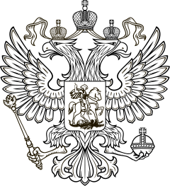
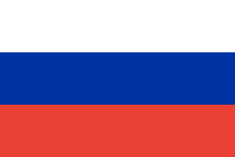

 
Административно-территориальные границы Российской Федерации
с присоединенными территориями
в форматах SVG и GeoJSON
Проекция:
Альберса
Меркатора
граница Российской Федерации
границы регионов России
.PNG
.SVG
.GeoJSON